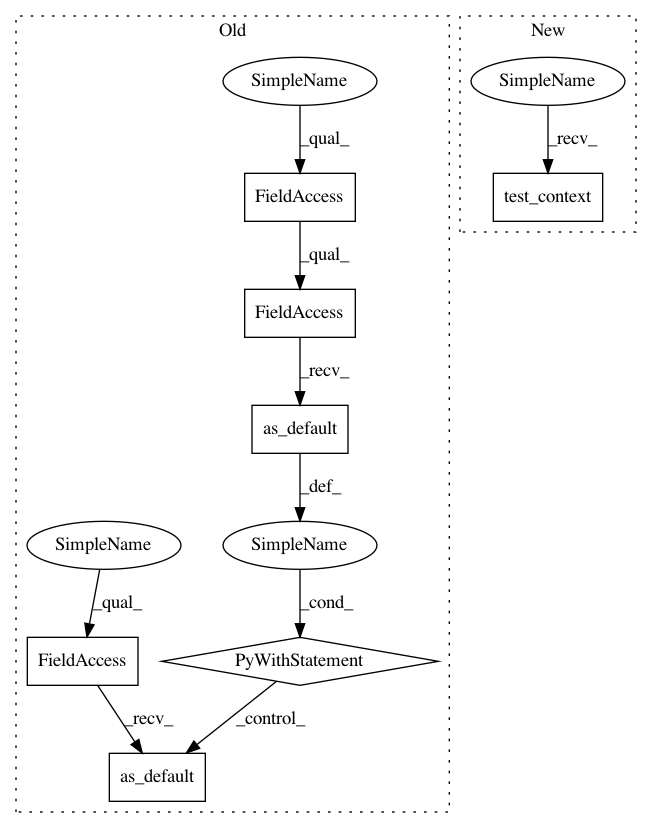

7c8e935f8de396e0c42e0d6d14600bcf70408b09,testing/test_coregion.py,TestEquivalence,test_predicts,#TestEquivalence#,116
Before Change
atol=1.0e-2)
def test_predicts(self):
with self.session.graph.as_default(), self.session.as_default():
X_augumented0 = np.hstack([self.Xtest, np.zeros((self.Xtest.shape[0], 1))])
X_augumented1 = np.hstack([self.Xtest, np.ones((self.Xtest.shape[0], 1))])
Ytest = [np.sin(x) + 0.9 * np.cos(x*1.6) for x in self.Xtest]
Y_augumented0 = np.hstack([Ytest, np.zeros((self.Xtest.shape[0], 1))])
Y_augumented1 = np.hstack([Ytest, np.ones((self.Xtest.shape[0], 1))])
// check predict_f
pred_f0 = self.vgp0.predict_f(self.Xtest)
pred_fc0 = self.cvgp.predict_f(X_augumented0)
self.assertTrue(np.allclose(pred_f0, pred_fc0, atol=1.0e-2))
pred_f1 = self.vgp1.predict_f(self.Xtest)
pred_fc1 = self.cvgp.predict_f(X_augumented1)
self.assertTrue(np.allclose(pred_f1, pred_fc1, atol=1.0e-2))
// check predict y
pred_y0 = self.vgp0.predict_y(self.Xtest)
pred_yc0 = self.cvgp.predict_y(
np.hstack([self.Xtest, np.zeros((self.Xtest.shape[0], 1))]))
// predict_y returns results for all the likelihodds in multi_likelihood
assert_allclose(pred_y0[0], pred_yc0[0][:, :np.array(Ytest).shape[1]], atol=1.0e-2)
assert_allclose(pred_y0[1], pred_yc0[1][:, :np.array(Ytest).shape[1]], atol=1.0e-2)
pred_y1 = self.vgp1.predict_y(self.Xtest)
pred_yc1 = self.cvgp.predict_y(
np.hstack([self.Xtest, np.ones((self.Xtest.shape[0], 1))]))
// predict_y returns results for all the likelihodds in multi_likelihood
assert_allclose(pred_y1[0], pred_yc1[0][:, np.array(Ytest).shape[1]:], atol=1.0e-2)
assert_allclose(pred_y1[1], pred_yc1[1][:, np.array(Ytest).shape[1]:], atol=1.0e-2)
// check predict_density
pred_ydensity0 = self.vgp0.predict_density(self.Xtest, Ytest)
pred_ydensity_c0 = self.cvgp.predict_density(X_augumented0, Y_augumented0)
self.assertTrue(np.allclose(pred_ydensity0, pred_ydensity_c0, atol=1e-2))
pred_ydensity1 = self.vgp1.predict_density(self.Xtest, Ytest)
pred_ydensity_c1 = self.cvgp.predict_density(X_augumented1, Y_augumented1)
assert_allclose(pred_ydensity1, pred_ydensity_c1, atol=1e-2)
// just check predict_f_samples(self) works
self.cvgp.predict_f_samples(X_augumented0, 1)
self.cvgp.predict_f_samples(X_augumented1, 1)
// check predict_f_full_cov
self.vgp0.predict_f_full_cov(self.Xtest)
self.cvgp.predict_f_full_cov(X_augumented0)
self.vgp1.predict_f_full_cov(self.Xtest)
self.cvgp.predict_f_full_cov(X_augumented1)
if __name__ == "__main__":
unittest.main()
After Change
atol=1.0e-2)
def test_predicts(self):
with self.test_context():
X_augumented0 = np.hstack([self.Xtest, np.zeros((self.Xtest.shape[0], 1))])
X_augumented1 = np.hstack([self.Xtest, np.ones((self.Xtest.shape[0], 1))])
Ytest = [np.sin(x) + 0.9 * np.cos(x*1.6) for x in self.Xtest]
In pattern: SUPERPATTERN
Frequency: 4
Non-data size: 7
Instances
Project Name: GPflow/GPflow
Commit Name: 7c8e935f8de396e0c42e0d6d14600bcf70408b09
Time: 2017-11-05
Author: art.art.v@gmail.com
File Name: testing/test_coregion.py
Class Name: TestEquivalence
Method Name: test_predicts
Project Name: GPflow/GPflow
Commit Name: 7c8e935f8de396e0c42e0d6d14600bcf70408b09
Time: 2017-11-05
Author: art.art.v@gmail.com
File Name: testing/test_coregion.py
Class Name: TestEquivalence
Method Name: test_mean_values
Project Name: GPflow/GPflow
Commit Name: 7c8e935f8de396e0c42e0d6d14600bcf70408b09
Time: 2017-11-05
Author: art.art.v@gmail.com
File Name: testing/test_coregion.py
Class Name: TestEquivalence
Method Name: test_likelihood_variance
Project Name: GPflow/GPflow
Commit Name: 7c8e935f8de396e0c42e0d6d14600bcf70408b09
Time: 2017-11-05
Author: art.art.v@gmail.com
File Name: testing/test_coregion.py
Class Name: TestEquivalence
Method Name: test_kernel_variance